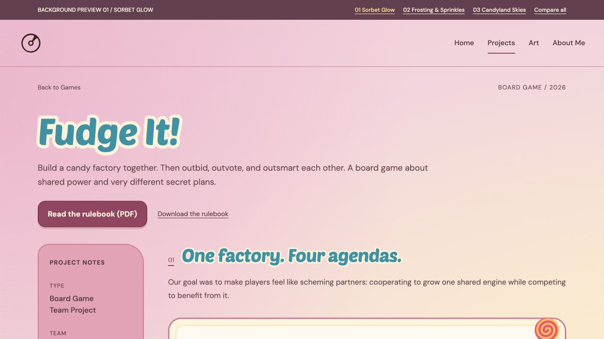
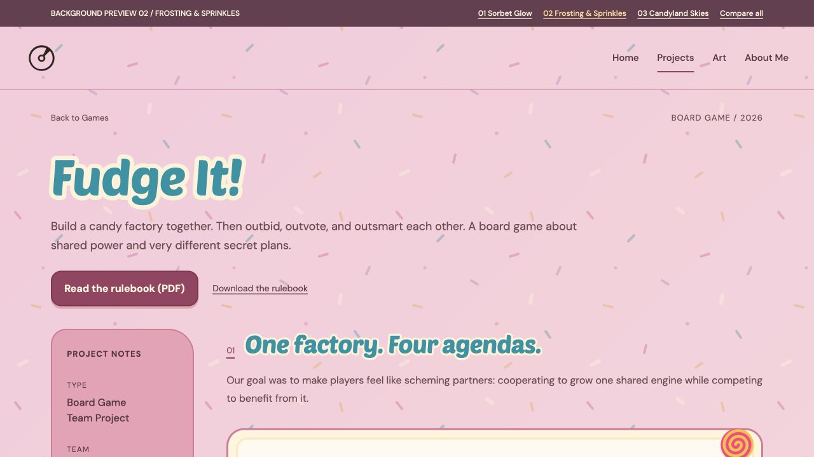
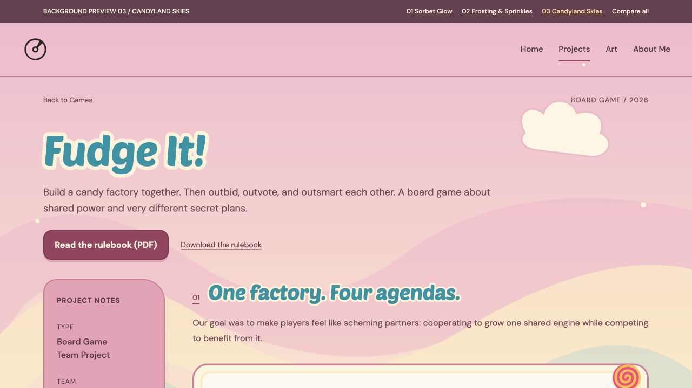

01 · Sorbet Glow
Blended strawberry, peach, vanilla and a hint of mint. The quietest way to add depth.
Open full preview
Fudge It! / Background studies
Three different backgrounds, with the same project layout and all your latest fixes: thick outlined titles, larger corner candies, the upright prototype photo, and the fitted survey chart.
These backgrounds are previews. The main page has your requested fixes with its existing pink background.
Blended strawberry, peach, vanilla and a hint of mint. The quietest way to add depth.
Open full preview
A playful scatter of teal, berry, vanilla and golden sprinkles over a pink gradient.
Open full preview
Cream clouds, a pink-to-peach sky, and soft layered pastel hills inspired by your references.
Open full preview